The electrochemical energy storage sector is currently navigating a period of profound structural adjustment, characterized by a rapid escalation in individual cell capacities and a fundamental reconfiguration of system-level engineering. As the industry moves past the era of the 280Ah and 314Ah Lithium Iron Phosphate prismatic cells, a new technological schism has emerged, centered on the competition between the 587Ah and 684Ah formats.
This transition represents more than a mere incremental increase in capacity; it is a strategic response to the maturing requirements of global grid-scale energy storage, where the metrics of success have shifted from simple energy density to sophisticated lifecycle revenue certainty, Balance of System (BOS) cost reduction, and long-term operational stability.
The Paradigm Shift in Electrochemical Energy Storage
The evolution is driven by an engineering logic that favors system-level cost reconstruction over simple cell-level parameters. The shift to 500Ah+ cells is intended to reduce the number of cells per container system by over 60%, which in turn reduces the complexity of wiring, welding points, and sensing channels. The competition between the 587Ah Golden Balance championed by manufacturers like CATL and REPT BATTERO , and the 684Ah Density Frontier led by Sunwoda Mobility Energy Technology and integrated by Sungrow , represents two distinct philosophical approaches to the next generation of Energy Storage Systems (ESS).
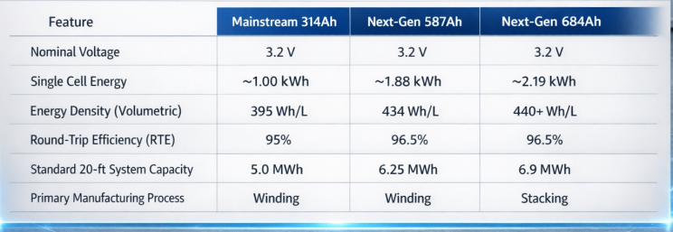
The Engineering Philosophy of 587Ah: The Golden Balance
The 587Ah format is not an arbitrary capacity selection but is the result of a multi-objective optimization process designed to align with the constraints of the 1,500V Power Conversion System (PCS) platform and global logistics standards. Leading manufacturers like CATL and HiTHIUM Energy Storage argue that the 587Ah specification represents a golden balance point between regulatory compliance, system compatibility, and electrochemical performance. This format is specifically designed for integration into mainstream 20-foot containers while adhering to the 45-tonne transport limit for hazardous materials.
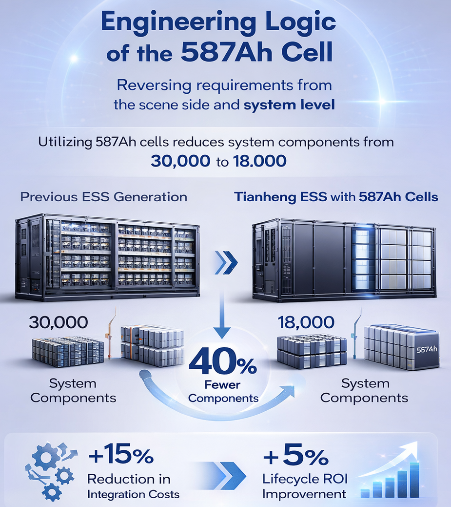
The engineering logic of the 587Ah cell is rooted in the Tianheng ESS system concept, where the cell size is derived by reversing the requirements from the scene side and the system level. By utilizing 587Ah cells, integrators can reduce the total number of system components from 30,000 to 18,000, which represents a 40% reduction in complexity and a 15% reduction in system integration costs. This reduction is critical for improving the lifecycle Return on Investment (ROI), which is estimated to increase by 5% over previous generations.
Wending Technology and Structural Optimization
A significant technological driver for the 587Ah format is the Wending battery technology pioneered by REPT Battero. This architecture employs a top-top design that reduces the redundant electronic impedance of the battery tabs by 16%. This structural modification not only improves electrical efficiency but also increases the internal space utilization by 3%, allowing for a higher concentration of active materials within the same external dimensions.
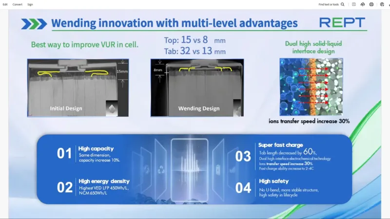
Furthermore, the 587Ah cell utilizes advanced material systems, such as dual high solid-liquid interface technology, which increases the ion migration rate by 30%. To address the challenges of longevity, manufacturers have implemented low-slow decay and high-loss lithium technology, using specific electrode materials to achieve a cycle life exceeding 12,000 cycles. This longevity is often marketed as "zero degradation" for the first five years of operation, a feature that significantly enhances project bankability and aligns the battery lifespan with the 25-to-30-year operating life of photovoltaic power stations.
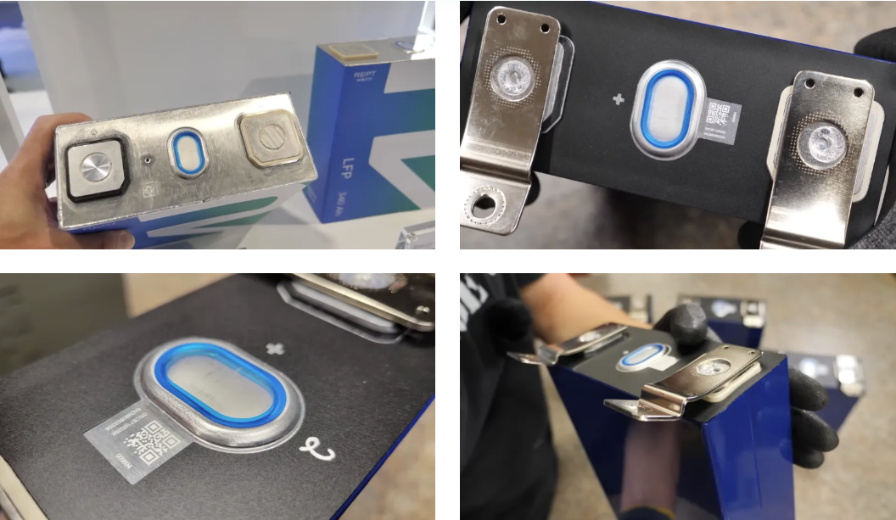
Performance Characteristics of 587Ah Cells
The performance of the 587Ah cell is characterized by its high energy density and efficiency. CATLs mass-produced 587Ah cell achieves a volumetric energy density of 434 Wh/L, a 10% increase over the previous generation. This density allows for a 25% gain in overall system energy density, enabling the deployment of 6.25MWh systems in a standard 20-foot footprint.
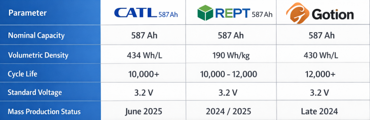
The 684Ah Stacking Revolution: Pushing Volumetric Limits
While the 587Ah format focuses on the golden balance, the 684Ah cell represents an aggressive pursuit of the volumetric frontier, primarily championed by Sunwoda and integrated into the Sungrow PowerTitan 3.0 AC smart storage platform. The 684Ah cell utilizes advanced Flash Stacking technology rather than the traditional winding process, which is regarded as the key to breaking through the capacity limitations of prismatic batteries.
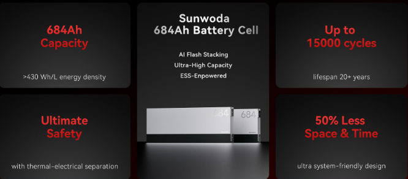
The 684Ah format allows for unprecedented system-level densities, enabling a 20-foot container to reach 6.9MWh and a 30-foot single cabinet to achieve 12.5MWh—currently the largest single capacity in the energy storage industry. This high-density design reduces container usage by 27% and lowers the Levelized Cost of Energy (LCOE) by 8%. For large-scale projects, this translates to a significant reduction in land requirements and site preparation costs, which are increasingly decisive factors in project feasibility.
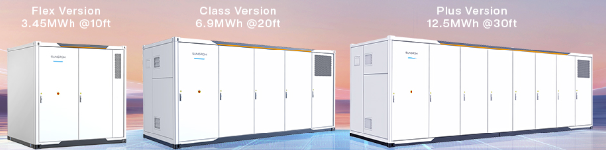
Flash Stacking vs. Traditional Winding
The choice of the stacking process for 684Ah cells is a strategic bet on the superior performance potential of laminated architectures. Unlike the winding process, where the jelly roll configuration can create uneven stress and dead space in the corners of the prismatic can, the stacking process ensures a more uniform distribution of current and temperature across the electrode surface. This uniformity is essential for managing the thermal gradients in cells of such large capacity, which can exceed 2kWh of energy per unit.
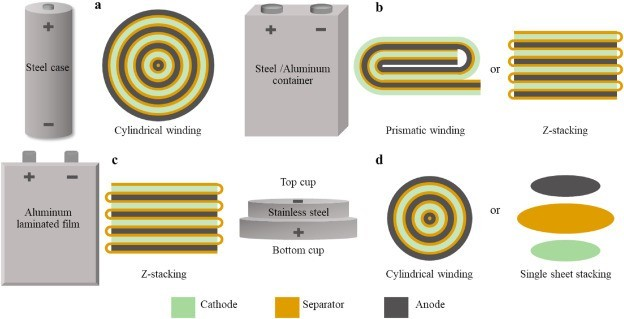
However, the stacking process is inherently more complex and requires significant initial investment in new production lines. Sunwoda's achievement of million-level mass production of 684Ah stacked cells within just three months of starting production indicates that the technology has reached a stable and mature phase of scalable manufacturing. This manufacturing milestone provides a solid foundation for long-term, large-scale deployment across global markets.
Longevity and Thermal Management of 684Ah Cells
To ensure a service life exceeding 20 years, 684Ah cells integrate thermal-electric separation designs and three-dimensional heat dissipation structures. These features are critical for maintaining stable performance throughout the cell lifecycle, especially under high-current discharge scenarios. The lithium replenishment version of Sunwoda's 684Ah cell can achieve an extraordinary cycle life of 12,000 to 15,000 cycles, making it one of the most durable formats available in the market.
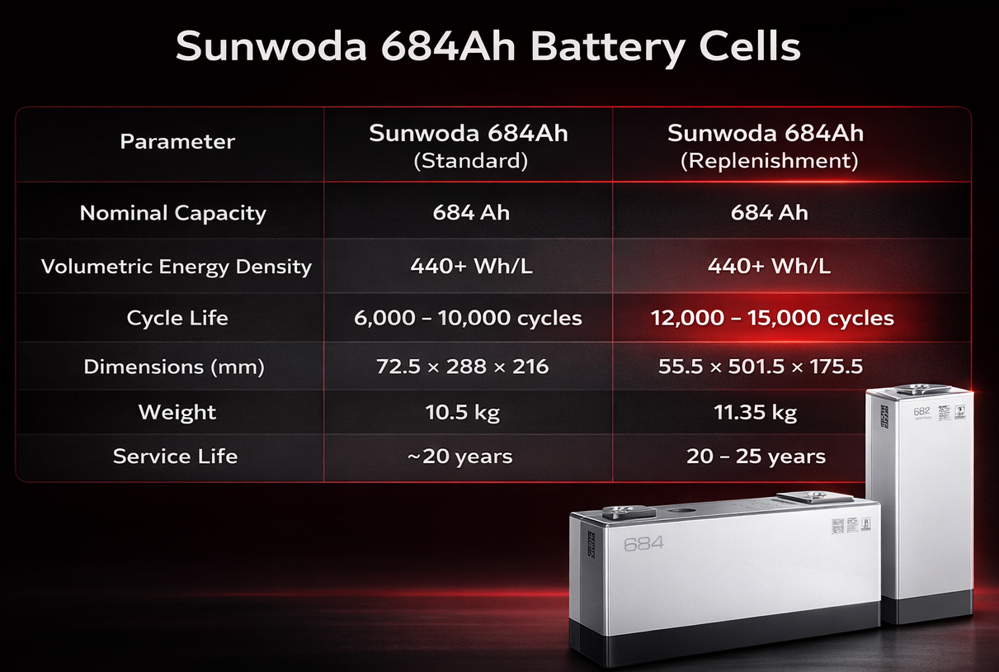
The tug-of-war between Standardization and Customization
Standardizing battery cell size is key to cost reduction in the industry, and it's also the most direct indicator of whether a product is standardized. Currently, two major schools of thought present different approaches to cell size design:
• 587Ah cell: 73mm×274mm×218mm (a representative size was selected), which is consistent with the 73174 size of the 314Ah cell, compatible with the current energy storage system architecture, and easy to quickly introduce to the market.
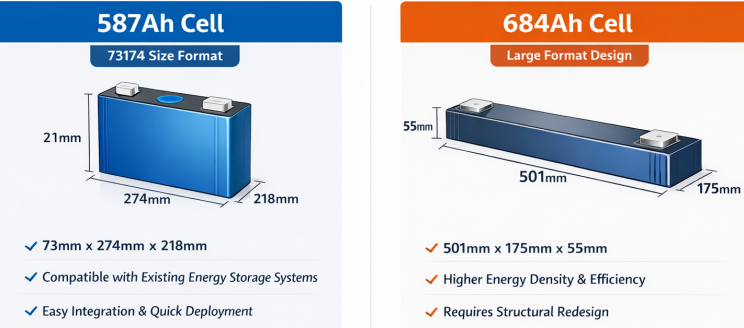
• 684Ah battery cell: 501mm×175mm×55mm. This is the size of the several companies that have announced their products so far. The volume utilization rate is improved through structural innovation, but it may face the challenge of adapting to the size of shipping containers.
Key takeaway: Energy storage system integrators prefer "plug-and-play" solutions; the 587Ah currently faces compatibility challenges. The 684Ah will have a greater advantage; and if innovative design can be achieved at the system level, it may overturn the existing pattern.
System Integration: The 6.25MWh to 7MWh Container Evolution
The transition to next-generation cells is driving a significant upgrade in the capacity of standard 20-foot energy storage containers. While the previous generation of 314Ah cells enabled 5MWh systems, the 587Ah cell has pushed this to 6.25MWh and 7MWh configurations. The 684Ah cell further extends this capability to 6.9MWh.
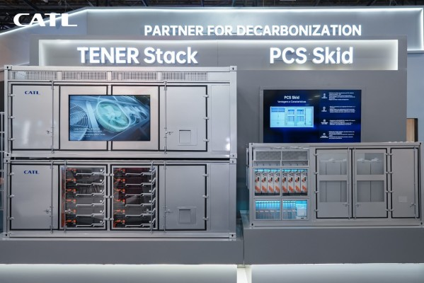
This increase in container-level energy density is not just about fitting more energy into the same space; it is about a fundamental redesign of the system architecture. By reducing the number of cells, integrators can simplify the cooling network and the Battery Management System (BMS). For instance, CATLs 587Ah-based TENER system reduces the total number of components by 40%, which significantly lowers the risk of failure in the interconnects and sensing channels.
The Impact of the 1,500V Platform
The next-generation ESS standard is firmly centered on the 1,500V DC voltage platform. This platform allows for higher system power and lower line losses, which improves overall power conversion efficiency and reduces the cost of electricity. However, the 1,500V platform places higher safety requirements on the individual cells. The 587Ah and 684Ah cells are designed to handle these higher voltages while maintaining the required insulation and dielectric strength throughout a 20-year service life.
In addition to electrical efficiency, the 1,500V platform enables the use of more modular Power Conversion Systems. The cost of these PCS units has dropped to the range of 0.15–0.18 RMB/Wh, further contributing to the overall reduction in system CAPEX. The integration of these high-capacity cells with 1,500V PCS creates a streamlined architecture that is compliant with international transport limits, resolving the overweight issues associated with previous-generation oversized systems.
O&M and the Value of Long-Term Stability
Where the next-generation cells truly change the economic profile is in the Operations and Maintenance (O&M) phase. Industry estimates place 587Ah system O&M costs at 0.04–0.08 RMB/Wh, accounting for 3%–10% of the total LCC. The advantage here is subtle but critical: fewer cells mean fewer failure points, and improved consistency reduces the burden on equalization and thermal management.
Furthermore, the extension of cycle life to 12,000+ cycles allows for an LCOS of 0.3–0.5 RMB/Wh, which is a significant improvement over the previous generation of 280Ah/314Ah systems. The ability to maximize revenue for every kilowatt-hour over a 20-year timespan is the ultimate metric of competition in the utility-scale sector.
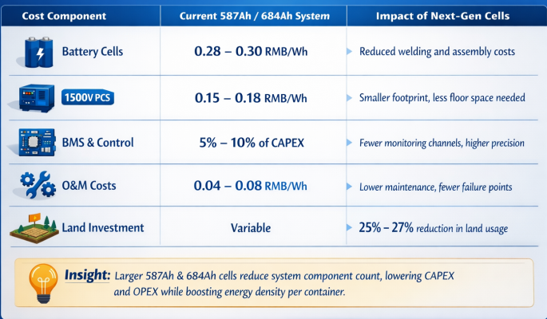
Thermal Runaway Mitigation
The primary safety innovation in next-generation cells is the use of fire-resistant electrolytes, non-diffusive anodes, and heat-resistant separators. These materials are designed to ensure that if a single cell fails, the event does not propagate to neighboring cells, a risk that is exacerbated in large-capacity formats. For example, the CATL 587Ah cell has passed the mandatory national standards GB/T 36276 and GB 44240, as well as critical tests like nail penetration and thermal runaway.
International Certifications and Bankability
For global market entry, these cells must pass a comprehensive suite of international certifications, including UL 1642, UL 1973, UL 9540A, and IEC 62619. These standards cover electrical performance, safety boundaries, environmental adaptability, and long-term reliability. Securing these certifications is critical for project bankability, as they provide insurance companies and investors with the necessary assurance of system reliability.
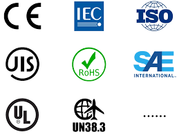
Sunwoda’s 684Ah cell, for instance, has successfully passed UL, IEC, and CE certifications, complying with the latest EU Battery Regulation regarding safety and environmental protection. This regulatory approval is a prerequisite for deployment in the major energy storage markets of North America and Europe, where local production costs and dependence on imported batteries typically command a premium.
Regional Trends in Battery Pricing
Battery pack prices for stationary storage have seen the sharpest drop across all segments, falling 45% between 2024 and 2025 to a record low of $70/kWh. This drop is primarily driven by intense competition in China, where there is immense overcapacity for cells specifically aimed at stationary storage applications.
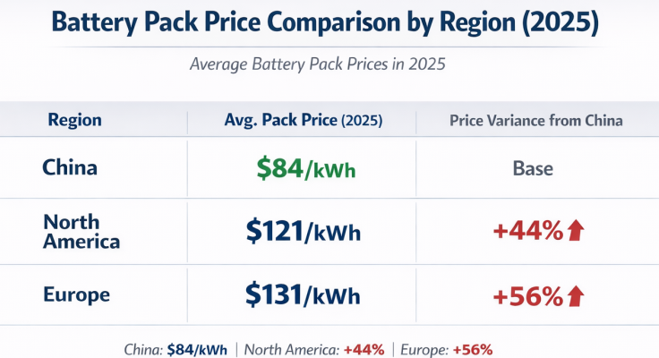
Market Selection and Standardization
It is likely that in the short term, multiple generations and formats of cells will continue to coexist. While 587Ah and 684Ah compete for the utility-scale mainstream, even larger cells like Hithium's 1175Ah format are being deployed for 8-hour+ long-duration requirements. At the other end of the spectrum, smaller formats like 314Ah may remain preferred for residential or smaller C&I applications where the complexity of ultra-large cell management is not justified by the scale.
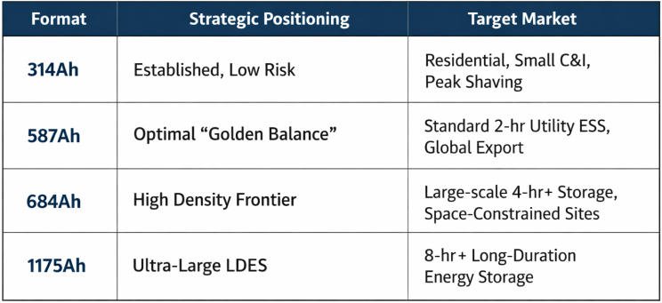
Who will win the favor of customers and investors?
Ultimately, the winner among technological approaches will be determined by market forces.
Advantages of the 587Ah:
The technology is mature and the risk of mass production is low; Compatible with existing energy storage systems, resulting in high customer acceptance; More competitive in the short term.
The potential of 684Ah:
Large capacity can significantly reduce LCOS (levelized cost of energy storage), which is a clear advantage in large-scale energy storage power plants; If leading battery manufacturers push forward with full force, industry standards can be quickly established.
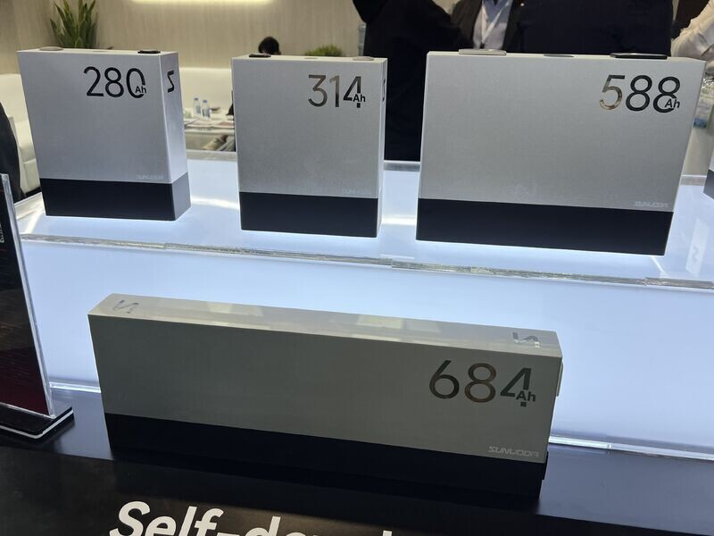
Conclusion
The competition between 587Ah and 684Ah energy storage systems is essentially an exploration of the "optimal solution" within the energy storage industry. In the short term, these two approaches may develop in parallel. In the long term, the winning technology will inevitably be the one that finds the best balance between safety, cost, and performance.
It is not a meaningless numbers game but a fundamental proof of the energy storage industry's technological maturity and its search for the "optimal solution" for grid-scale deployment. The winner of this "battle" will be determined by more than just capacity; it will be the format that can maximize revenue for every kilowatt-hour over a 20-to-30-year lifecycle while maintaining the highest safety and reliability standards.
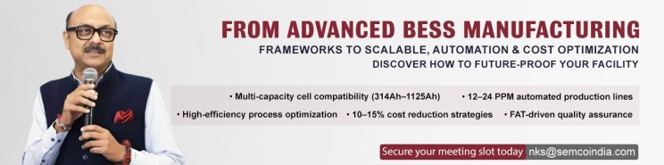